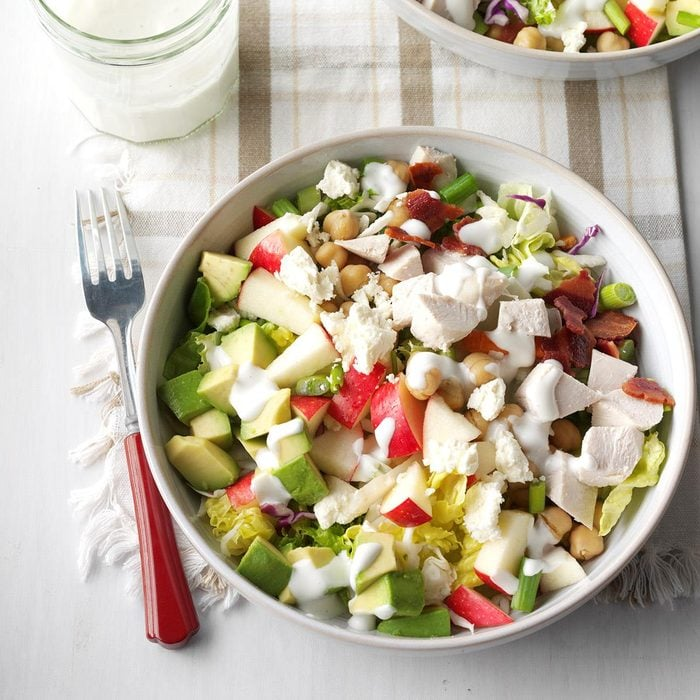

Cobb Salad Recipe
Servings - 4
Calories - 200
Prep Time - 10 min

Ingredients
- 3 cups coleslaw mix
- 3 cups chopped lettuce
- 1 large apple, chopped
- 1/2 cup crumbled reduced-fat feta or blue cheese
- 1 cup cubed cooked chicken breast
- 2 green onions, chopped
- 4 turkey bacon strips, chopped and cooked
-
1 can (15 ounces) garbanzo beans or chickpeas, rinsed and drained
- 1 small ripe avocado, peeled and cubed
Instructions
-
Mix yogurt and dressing; thin with water as desired. Toss coleslaw
mix with lettuce; divide among four plates.
-
Arrange remaining ingredients in rows over top. Drizzle with yogurt
mixture.